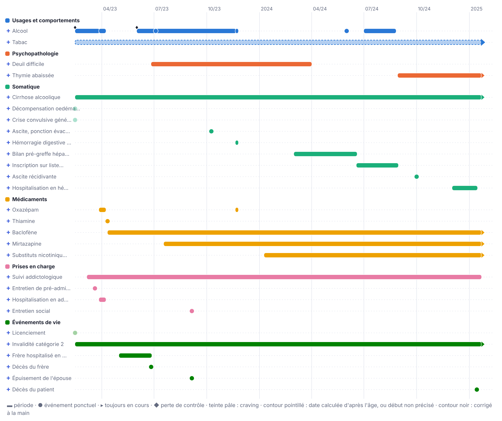

D'un mémoire de DFST d'addictologie. La frise est un outil conseillé en addictologie, mais relire trois cents pages pour la tracer prend trop de temps.
Des six dossiers réels qui ont servi à l'évaluation. Seuls des comptes en sont donnés : tout ce qui s'affiche ici est inventé.
C'est le découpage enseigné en addictologie. Tout le reste de la méthode vaut pour une autre discipline, avec d'autres lignes.
Non. Sans nom, le texte reste une donnée de santé : les dates et l'histoire restent. D'où un prestataire qui ne conserve rien, et à terme un hébergement agréé dans l'établissement.
Sur les documents de contrôle, tout ce qui avait été annoté est masqué, mais ces documents ont servi à régler l'outil. La relecture par le clinicien reste obligatoire.
C'est voulu. Le courrier dit « du 05/12/2022 au 16/12/2023 » : une contradiction placée exprès dans ce dossier inventé, comme on en trouve dans les vrais. La frise ne les signale pas encore.
Il reste à améliorer : sur ce dossier, ses dix repères ne retiennent ni la méthadone ni la grossesse. Le choix des repères se corrige à la main.
L'outil propose aussi des événements non attendus : souvent des détails vrais, parfois des doublons. Erreurs typiques : un antécédent daté du jour où on le rapporte, un traitement noté « en cours » alors qu'il s'arrête plus loin.
Environ un dollar par dossier avec le modèle retenu. Des modèles dix fois moins chers existent, mais ils retrouvent moins d'événements.
Quatre questions ouvertes, à droite. L'outil reste à portée de clic pour y revenir.
Il est libre et gratuit, à l'adresse matias-ceau.github.io/addictoscope, avec les dossiers inventés.
Un outil automatique, appliqué à l'addictologie · mémoire de DFST · Matias Ceau
« Quand le trouble a-t-il commencé ? Quels traitements ont été essayés, et pourquoi arrêtés ? »
Six dossiers réels d'addictologie (comptes seulement).
Le parcours d'avant le suivi compte autant que le suivi : la frise commence à l'enfance quand le dossier le raconte.
Noms, date de naissance, adresse, téléphone. Le clinicien relit. Chaque nom devient une étiquette : [PATIENT], [SOIGNANT 2]…
Une IA lit le texte sans nom et relève les événements, chacun avec la note dont il vient.
Les vrais noms sont remis. Un clic sur un événement ouvre la note d'origine.
S'il reste un nom dans le document, l'envoi est bloqué.
20 dossiers inventés pour l'évaluation : 14 courts (4 pages) et 6 longs (21 à 26 pages, 6 à 9 ans de suivi). Vrais dossiers : six, 302 pages, sans réponse connue.
Un arrêt de traitement ou une reprise de consommation sont souvent notés en passant, plusieurs notes plus loin.
Perte de contrôle, frontière entre usage et rechute, changement de forme d'un traitement.
Dossiers inventés. Sur les vrais, un modèle relit un modèle : cela mesure un accord, pas une exactitude clinique.
Une erreur reste possible : le lien vers la note d'origine permet de la vérifier en un clic.

Capture d'une frise (dossier inventé « alcool et cirrhose »).